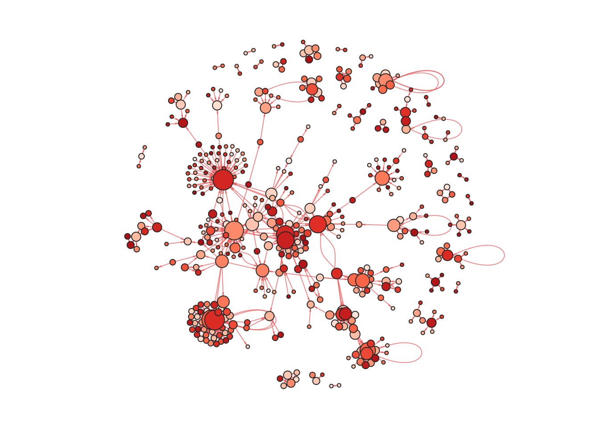

Examples
Setup
Install
graphTweets is available on CRAN and github. These examples are based upon the v4.0 version from github
install.packages("graphTweets") # from CRAN
devtools::install_github("JohnCoene/graphTweets") # from github
library(graphTweets) # loadFunctions
graphTweets only comes with three functions
package?graphTweetsData
Set yourself up with rtweet to fetch tweets.
Data sets used in these slides:
- rstats.RData - 200 tweets on #rstats.
- presi.RData - 200 tweets on President Donald Trump.
Example 01
search Twitter
Here I use the rtweet package to get 100 tweets on “#rstats”, download this dataset.
library(rtweet)
# replace with your details
token <- create_token(consumer_key, consumer_secret)
r_tw <- search_tweets("rstats", token = token)igraph
Using igraph to build and plot the network.
r_tw %>%
gt_edges(text, screen_name) %>%
gt_graph() %>%
plot(., layout = layout.fruchterman.reingold(g))igraph plot

networkD3
You may also use the networkD3 package.
r_tw %>%
gt_edges(text, screen_name) %>%
gt_graph() -> g
members <- membership(walktrap.community(g))
g <- networkD3::igraph_to_networkD3(g, members)
networkD3::forceNetwork(Links = g$links, Nodes = g$nodes, Group = "group",
Source = 'source', Target = 'target', NodeID = 'name', width = "100%")Export
Alternatively one may use the igraph package to save the graph and import it in another software.
r_tw %>%
gt_edges(text, screen_name) %>%
gt_graph() %>%
gt_save()Then open it in Gephi.
Example 02
build graph
Let’s use the same data set as in the previous example but this time add meta-data to the nodes so we can use that in the plot: size vertices according to the number of followers.
r_tw %>%
gt_edges(text, screen_name) %>%
gt_nodes(TRUE) %>% # add meta here
gt_graph() -> g## Warning in if (class(newval) == "factor") {: the condition has length > 1
## and only the first element will be used# remove NAs
V(g)$followers_count <- ifelse(is.na(V(g)$followers_count ), 1, V(g)$followers_count)
plot(g, layout = layout.fruchterman.reingold(g),
vertex.color = "#2196f3",
vertex.label.family = "sans",
vertex.label.color = hsv(h = 0, s = 0, v = 0, alpha = 0.0),
vertex.size = log1p(V(g)$followers_count),
edge.arrow.size = 0.2,
edge.arrow.width = 0.3, edge.width = 1,
edge.color = hsv(h = 1, s = .59, v = .91, alpha = 0.7),
vertex.frame.color="#fcfcfc")
Example 03
Temporal graph
Temporal graphs are do-able within R but remain clunky; one has to plot a graph frame by frame and turn it into a gif.
gt_dyn somewhat remedies to this: it let’s you build a temporal graph in R to be imported in Gephi. To build a dynamic graph it is necessary to add created_at in edges and set meta=TRUE in nodes.
presi %>%
gt_edges(text, screen_name, "created_at") %>%
gt_nodes(TRUE) %>%
gt_dyn() %>%
gt_save()See ?gt_dyn for more options
In Gephi
To make the graph dynamic in Gephi a few more steps are required. The following slides essentially go through the steps detailed here on slides 25 and 26.
Merge columns
In the data laboratory for both the “nodes” and “edges” merge the columns “start.stamp” and “end.stamp”. Select “create time interval” in the dropdown.

gephi.gif
In the following window check “parse dates”, if you followed the steps in the previous slides in creating the graph and set start.stamp = "created" in dynamise use yyyy-MM-dd HH:mm:ss as date format.
Timeline
You should now be able to “enable timeline” at the bottom of the screen. Then again, if you followed the steps in the previous slides in creating the graph then in the bottom left corner hit the gear icon and hit “set time format”, change it to “Datetime”.

gephi.gif
That’s it, mess around with the timeline.
Output

gephi.gif
If you encounter issues go to, Github issues.
For the manual go on CRAN.